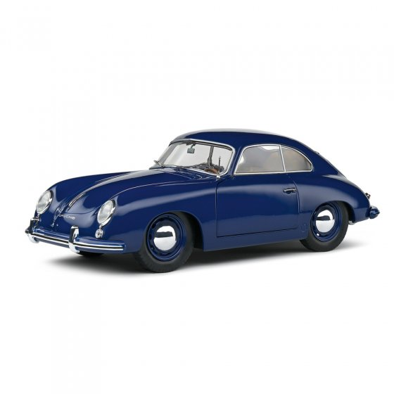
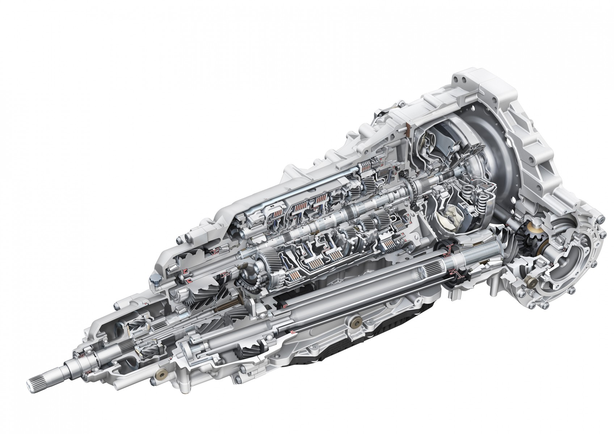
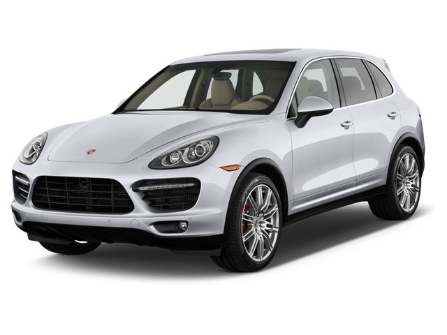
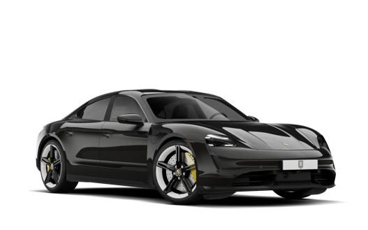

1931 - Oprichting

- Oprichting en Doel
Porsche werd in 1931 opgericht door Ferdinand Porsche in Stuttgart, Duitsland, als een technisch adviesbureau gericht op motor- en voertuigontwikkeling.
- Eerste Grote Project
Een van Porsche's eerste opdrachten was het ontwerpen van de Volkswagen Beetle, een betaalbare auto voor het grote publiek. Dit project gaf het jonge bedrijf aanzien en bekendheid.
- Eerste Stappen naar Sportwagens
Na het succes met Volkswagen begon Porsche zich te richten op het ontwikkelen van sportwagens, wat leidde tot de introductie van de Porsche 356 in 1948, de eerste auto die de naam "Porsche" droeg en de start van een legendarische lijn sportwagens.
1948 - Porsche 356
- Introductie van de Porsche 356
In 1948 werd de Porsche 356 gelanceerd als de eerste sportwagen van het merk. Ontworpen door Ferdinand Porsche's zoon, Ferry Porsche, was deze auto een pionier voor het merk en werd gebouwd in een kleine werkplaats in Oostenrijk.
- Lichte en Wendbare Constructie
De 356 stond bekend om zijn lichte carrosserie en wendbare rijgedrag, eigenschappen die al snel de standaard zouden worden voor Porsche’s toekomstige sportwagens.
- Internationaal Succes en Populariteit
Dankzij zijn prestaties en unieke ontwerp groeide de Porsche 356 wereldwijd snel uit tot een iconische sportwagen, wat het fundament legde voor de wereldwijde reputatie van Porsche als fabrikant van hoogwaardige sportwagens.
1964 - Porsche 911

- Lancering van de Porsche 911
In 1964 introduceerde Porsche de 911, een model dat al snel het vlaggenschip van het merk werd. Ontworpen door Ferdinand “Butzi” Porsche, werd de 911 bekend om zijn unieke silhouet en achterin geplaatste motor.
- Technische Innovatie en Prestatievermogen
De 911 bood krachtige prestaties met een zescilinder boxermotor en was direct geliefd om zijn snelheid en rijgedrag. De innovatieve motorpositie en de uitgebalanceerde handling zorgden voor een nieuwe rijervaring in de sportwagenwereld.
- Een Tijdloze Legende
De 911 groeide uit tot een iconische auto die door de jaren heen steeds werd verbeterd en vernieuwd, maar altijd trouw bleef aan zijn oorspronkelijke ontwerp en filosofie. Dit model blijft tot op de dag van vandaag een symbool van Porsche’s passie voor sportwagens.
1989 - Tiptronic
- Introductie van Tiptronic
In 1989 bracht Porsche het Tiptronic-systeem op de markt, een nieuwe automatische versnellingsbak met de mogelijkheid tot handmatige bediening, ontworpen om de rijervaring te verbeteren.
- Flexibiliteit voor Rijders
Tiptronic bood bestuurders de keuze tussen volledig automatische transmissie en handmatige schakeling, waardoor ze de controle en sportiviteit van handmatig schakelen konden ervaren zonder de complexiteit van een koppeling.
- Doorbraak in Autotechnologie
Dit innovatieve systeem werd een populaire optie voor verschillende Porsche-modellen en inspireerde andere autofabrikanten. Tiptronic wordt gezien als een belangrijke stap in de ontwikkeling van moderne versnellingssystemen.
2002 - Porsche Cayenne
- Introductie van de Porsche Cayenne
In 2002 lanceerde Porsche de Cayenne, zijn eerste SUV-model, waarmee het merk een nieuwe markt betrad en zich verder uitbreidde buiten de traditionele sportwagens.
- Nieuwe Markt, Onverwacht Succes
Hoewel de Cayenne een onverwachte verschuiving was voor Porsche, bleek de SUV enorm succesvol en wist het een breder publiek aan te spreken door luxe en prestaties te combineren met ruimte en veelzijdigheid.
- Pionier voor Porsche’s SUV-Range
De Cayenne legde de basis voor Porsche's verdere ontwikkelingen in het SUV-segment, met modellen die nog steeds veel gevraagd zijn en een grote invloed hebben op het imago en de financiële groei van het merk.
2019 - Porsche Taycan
- Introductie van de Porsche Taycan
In 2019 onthulde Porsche de Taycan, hun eerste volledig elektrische sportwagen, waarmee het merk een belangrijke stap zette naar elektrische mobiliteit en duurzaamheid
- Innovatie en Technologie
De Taycan introduceerde baanbrekende technologieën, zoals een 800-volt systeem voor ultrasnelle laadtijden en een uitzonderlijk bereik, wat Porsche’s toewijding aan hoge prestaties en innovatie in de elektrische autosector benadrukt.
- Verkenning van een Groene Toekomst
Met de Taycan liet Porsche zien dat elektrisch rijden zonder compromis op snelheid en rijervaring mogelijk is, en het model diende als startpunt voor toekomstige elektrische modellen binnen de Porsche-familie.